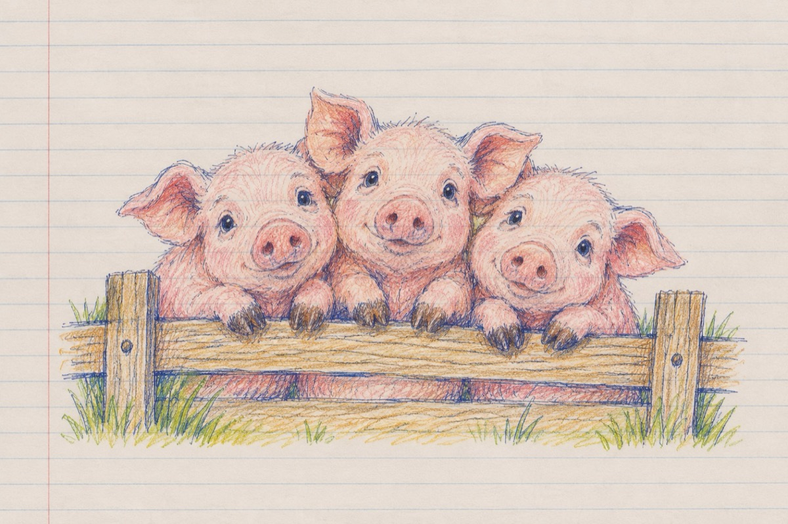

Porcii
Ființe fără de vină
Ce-s în grija omului
A venit boala porcină
Fără grija nimănui!
- Da, ție mă adresez
Omule ce mă privești
De ce oare ne trădezi
Și nu vrei de boală să ne ferești?
Ce dați vina pe mistreți
Urși și alte "lighioane"
Nu vreți să fiți înțelepți
Și ne amărâți, O, Doamne!...
Ați făcut iar o tocmeală
Mârșavă, guvernamentală
Cu "acei" de pe afară
Pentru piața mondială?!
Pentru un pumn de arginți
Ce-i țineți la teșcherea
Ați ajuns viața noastră să o vindeți
Fără pic de "cherestea"!
Da, noi suntem porci, o știm
Cum suntem etichetați
Condamnați ca să murim
Insă cei ce ne-au trădat sunt porci adevărați!
Vasile Groza